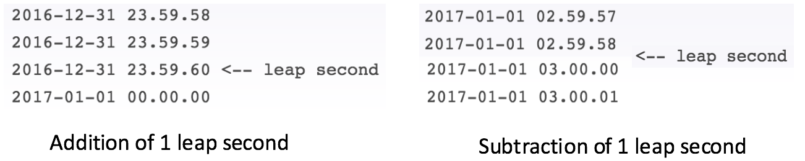
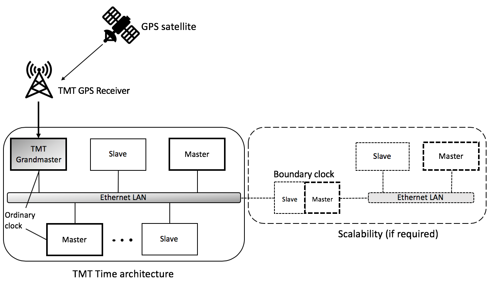
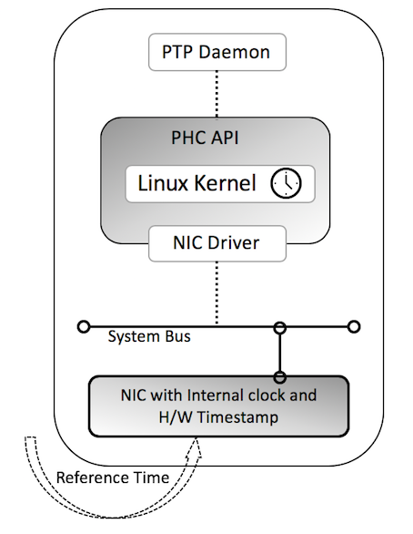

Time Service
Introduction
The time service implementation provides API for managing time across various components within the TMT architecture. TMT has standardised on the use of Precision Time Protocol (PTP), an IEEE 1588 standard, as the basis of observatory time to achieve sub-microsecond accuracy and precision. The PTP grand master clock (a hardware device) is synchronized to the Global Positioning System (GPS) time. Each computer system participating in the PTP network synchronizes to Observatory Time using the PTP protocol. For higher accuracy in time measurements, hardware time stamping is recommended and the network entities should be fitted with PTP capable Network Interface Cards (NIC).
The TMT time service relies on making native calls (Linux kernel C methods invocation) to get the nanosecond precise time overcoming the limitations of Scala and Java libraries which support only microsecond precision till date. These native calls are provided as wrapper over Java and Scala APIs for easy use by component developers familiar with Java/Scala. The TMT time service is responsible for primarily providing time in Coordinated Universal Time (UTC) and International Atomic Time (TAI) time scales. The handling of leap second event is taken care by the TMT time service automatically(without human intervention) as the PTP grandmaster distributes the accurate information when received through GPS.
The time service also allows for scheduling tasks either periodically or once using both UTC and TAI time. These schedulers are optimised for handling scheduled tasks at 1KHz frequency or 1 task every 1 millisecond. However, there can be jitters due to JVM garbage collection, CPU loads and concurrent task execution.
Summary of relevant time metrics
-
Second – A second is defined as 9,192,631,770 cycles of radiation corresponding to the transition between two hyperfine levels of the ground state of caesium 133
-
Leap Second – A second which is introduced to compensate for slight error in Earth’s rotation.

-
Time zones
-
TAI – International Atomic Time (Temps Atomique International) is defined as the weighted average of the time kept by about 200 atomic clocks in over 50 national laboratories worldwide. TAI was introduced in Jan 1, 1958.
-
UT – Universal Time (UT1 or UT) is a time standard based on Earth’s rotation. It is a modern continuation of Greenwich Mean Time (GMT) i.e., mean solar time.
-
UTC – Coordinated Universal Time (UTC) is the primary time standard by which the world regulates clocks and time. It is always within 1 second of UT. UTC differs from TAI by an integral number of seconds (currently 37). When needed, leap seconds are updated in UTC. UTC was introduced in 1972.
-
GPS – Global Positioning System Time is a uniformly counting time scale beginning at 00:00 of January 6, 1980. No leap seconds are inserted into GPS time. GPS time is always 19 seconds behind TAI.
-
-
Various clock quality factors determine the effectiveness of a time implementation.
Overview of IEEE 1588
The IEEE 1588 standard describes a protocol, PTP, used to synchronize clocks throughout a computer network using either UDP or TCP network packets. On an ethernet based local area network, it achieves clock accuracy in the sub-microsecond range, making it suitable for measurement and control systems. PTP is currently employed in diverse distributed domains and networks that require precise timing but lack access to satellite navigation signals. The recommended timescale of PTP is the same as TAI. PTP provides two mechanisms namely, hardware time stamping and software time stamping to achieve such a high accuracy.
TMT Time service architecture
The IEEE 1588 standards describe a hierarchical master-slave architecture for clock distribution. TMT Time service architecture follows the same topology as shown in the figure.
Under this architecture, a time distribution system consists of one or more network segments, and one or more clocks. The standard offers an automatic way for the configuration of the synchronization network, based on the nodes pre-programmed capabilities. A synchronization network consists one or more of the following entities:
-
Ordinary Clock - An ordinary clock is a device with a single network connection and is either the source of (master) or destination for (slave) a synchronization reference.
-
Grandmaster - The root timing reference of a distributed network is called the grandmaster. The grandmaster transmits synchronization information to the clocks residing on its network segment.
-
Boundary Clock (Optional) - A boundary clock has multiple network connections and can accurately synchronize one network segment to another. Once a boundary clock residing in a network segment having a grandmaster is synchronized it can then relay accurate time to the other connected network segments.
-
Transparent Clock (Optional) - The transparent clock modifies PTP messages as they pass through the device. Timestamps in the messages are corrected for time spent traversing the network equipment. This scheme improves distribution accuracy by compensating for delivery variability across the network.
-
Refer this for more details on various clocks.

For TMT, a simplified PTP system consisting of ordinary clocks connected to a single network, and no boundary clocks can be used. A grandmaster is elected and all other clocks synchronize directly to it. The grandmaster is a special entity which is configured to receive the accurate GPS time information (TAI time, TAI-UTC offset etc.) through a TMT GPS receiver. A master clock has the capability to serve the other nodes in the network when a grandmaster has failed. Such a master clock is elected as a grandmaster using the Best Master Clock Algorithm. A clock in the network distribution can be ‘*slave only*’ which will enforce it to be a slave, always. In case a new network segment is introduced a boundary clock can be set up to synchronize with the TMT grandmaster time. Synchronization and management of a PTP system is achieved through the exchange of protocol messages across the network segments.
Internals of a Network Component
In case of TMT most of the synchronization components will be based on Linux operating system. For understanding the internal working of Linux clock one can refer to this short description or follow ‘Chapter 6’ of the detailed document. The block diagram of an ordinary clock is shown in the following figure.

A reference time is transmitted through the Ethernet LAN from a master/grandmaster clock. To achieve sub-microsecond accuracy and precision, the Network Interface Card (NIC) of the component must have the capability to perform hardware timestamping, and an internal PTP Hardware Clock(PHC). Here’s a list which mentions of such capable NICs while there are various new additions in the market. Most of the current NICs are able to handle PTP protocol by default. Run the following command to find the details of a NIC.
sudo lshw -class network
The PHC API is an application programming interface which serves as a simplified tool to access and program the on–board clocks on the network adapters. This API is a part of the Linux kernel and synchronizes Linux clock with external time. The PTP Daemon protocol stack implements the specified rules of the synchronization by the IEEE 1588:2008 standard. The reliable and popular LinuxPTP project is utilised as the PTP Daemon for TMT since it meets the general requirements of supporting PTP synchronization across the network. LinuxPTP updates the PHC API to set the correct time on the Linux kernel as well as the system wall clock.
The ports 319 and 320 should be open for PTP to transmit messages. Run the following commands to update iptables.
iptables -I INPUT -p udp -m udp --dport 319 -j ACCEPT
iptables -I INPUT -p udp -m udp --dport 320 -j ACCEPT
firewall-cmd --permanent --zone=public --add-port=319/udp
firewall-cmd --permanent --zone=public --add-port=320/udp
The recommendation is to utilise the PTP Hardware Timestamping(available at the PHY layer in a network stack) mechanism for TMT to meet the nanosecond requirement. Various tests are performed and documented to support the sub-microsecond capability of IEEE 1588 standard using H/W timestamping. In contrast, the PTP software timestamping makes use of the application layer timestamp having a latency overhead.
Usage of PTP time
The PTP synchronization assures that the whole TMT system is following an accurate UTC/TAI time with high precision. All the applications running inside TMT should make use of the PTP time to perform time related operations like logging, scheduling etc.
Extracting time
The CSW provides the time service APIs written in Scala and Java for the component developers. Once the Linux kernel is set with PTP time, these APIs use Java Native Access (JNA) based kernel calls to fetch the time information. The class TimeLibrary is responsible for loading the Linux kernel C libraries and declare the native methods relevant for extracting time information. The clock id determines the clock to fetch time.
- Scala
-
val ClockRealtime = 0 // system-wide realtime clock. Its time represents seconds and nanoseconds since the Epoch val ClockTAI = 11 // It is basically defined as CLOCK_REALTIME(UTC) + tai_offset.
The following snippet defines the usage of JNA kernel call to fetch UTC/TAI time and tai_offset(kernel variable) in the Scala API.
- Scala
-
private def now(clockId: Int): Instant = { val timeSpec = new TimeSpec() TimeLibrary.clock_gettime(clockId, timeSpec) Instant.ofEpochSecond(timeSpec.seconds.longValue(), timeSpec.nanoseconds.longValue()) } override def offset: Int = { val timeVal = new NTPTimeVal() TimeLibrary.ntp_gettimex(timeVal) if (timeVal.tai == 0) printWarning() timeVal.tai }
Based on the comparison between JNA and JNI
and stakeholder agreement, JNA was fixed to make the low level kernel calls.
Scheduling
TMT time service provides scheduler for scheduling tasks once or periodically. The schedulers can be used to handle tasks at 1KHz frequency or 1 task every millisecond. However, jitters and JVM garbage collection can degrade the performance of the schedulers at such a high frequency. Internally, the scheduler APIs makes use of ‘Akka Scheduler Library’. The results published in here compares some of the options and makes strong recommendation to use the Akka Schedulers. The snippets in the API documentation defines the schedule APIs in the CSW library.
One of the major challenge in designing the scheduler was to handle the leap second event. The leap second plays an important role in affecting the UTC time. Therefore, a scheduler accepting future UTC time as a start time can behave unpredictably and less accurately. Time service scheduler APIs provide capability to schedule tasks on the absolute TAI time synchronized using the IEEE 1588 standard. This approach eliminates anomaly of a leap second event and provide robustness in the scheduling mechanism. Depending on developer’s choice, scheduled tasks are queued in either UTC or TAI time encapsulated inside TMTTime.